The JB
Crew.
Twenty lunatics off the box art and the old posters. They got dressed in real JB merch and stopped taking direction. Now they float around the site doing whatever they want. Grab one and throw it. Tap one and it talks back. Every one of them has a page and a rap sheet.
Find your crewFour questions. We match you to the one who gets you.
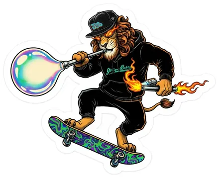
TorchThe lion on the torch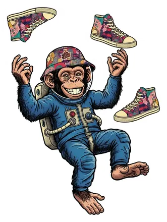
Lunar LarryAstronaut, retired, still floating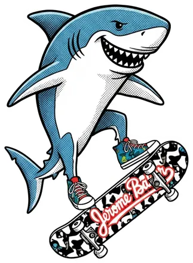
ChompsKickflips, bites things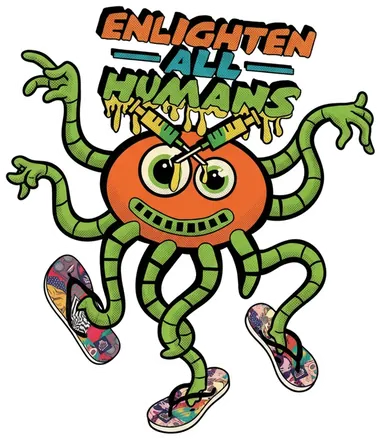
OchoEight arms, four flip-flops DJ RivetsOne-of-one sets only
DJ RivetsOne-of-one sets only Sticky RickyGrillmaster, very serious about it
Sticky RickyGrillmaster, very serious about it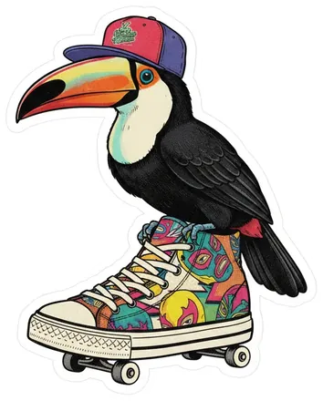
Big BillRides one shoe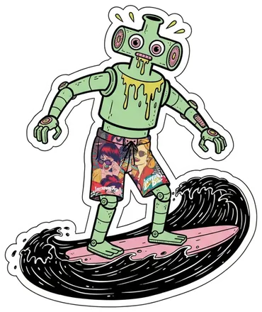
CrudeRobot, needs oil, surfs it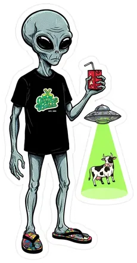
BeamerAbducts cows, drinks juice boxes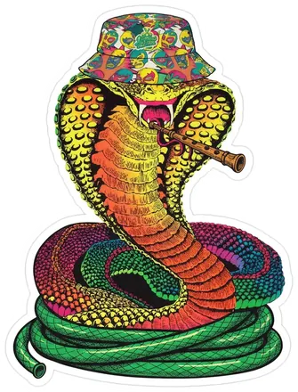
Mama CobraSnake charmer, reversed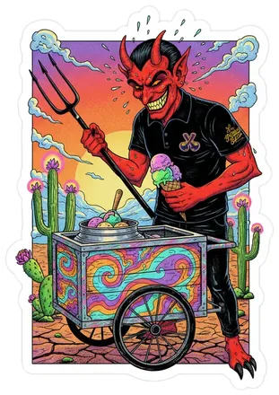
Lil' LuckyRuns an ice cream cart in a hot place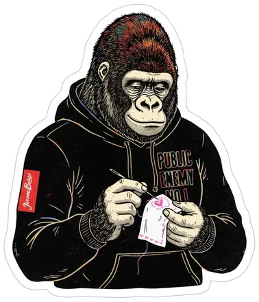
Big StitchWanted poster, retired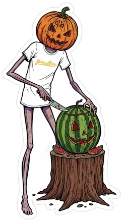
GourdoCarves watermelons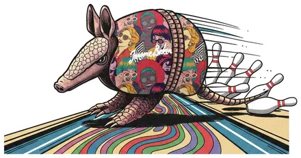
GutterballB0wls with himself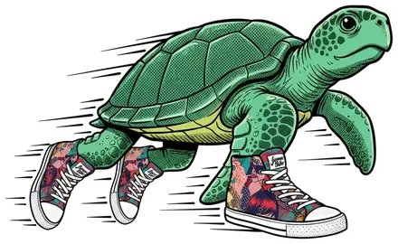
SpeedbumpFastest turtle in glass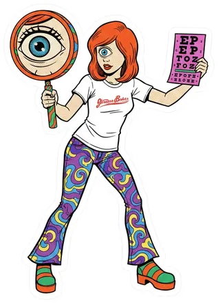
Dr. SquintEye doctor, one eye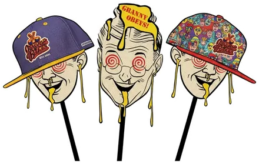
The Zone-OutsThree heads, one harmony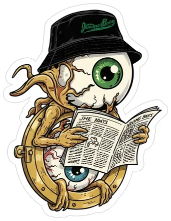
Lookie LouLives in a porthole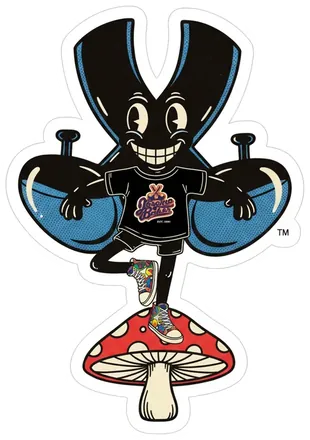
Mr. XThe mark, on a mu$hroom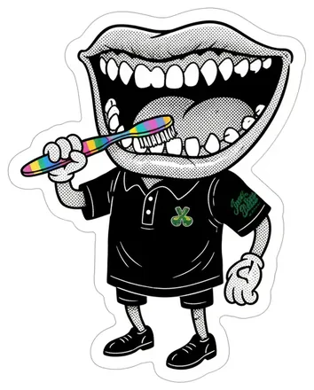
MouthyAll teeth, all the time